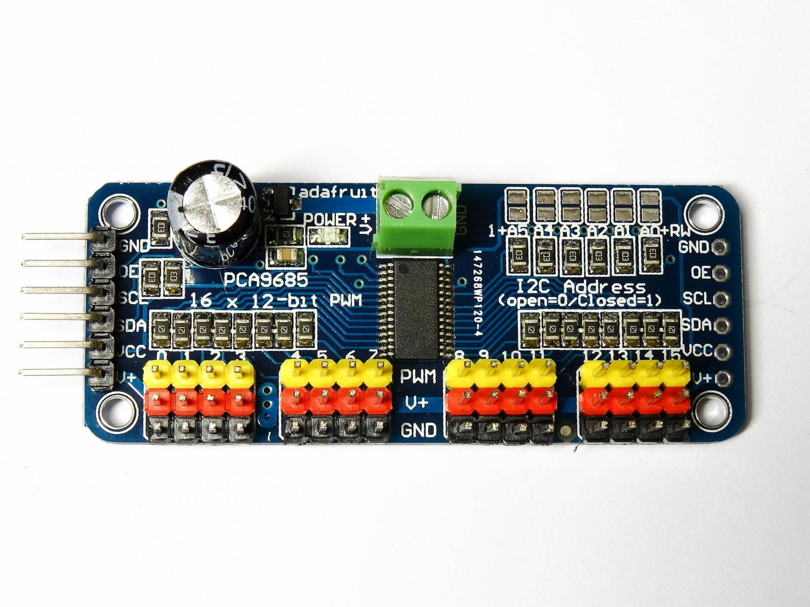
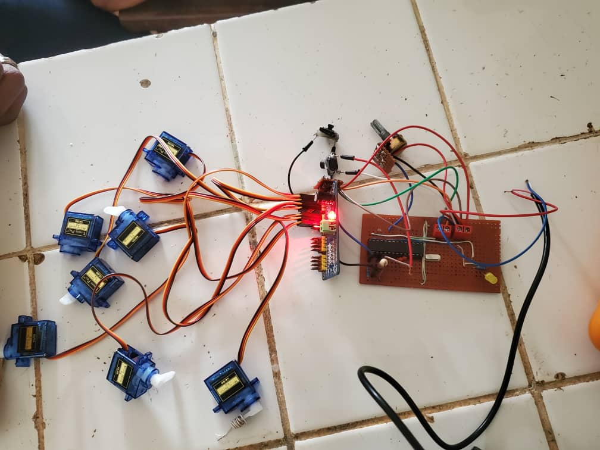
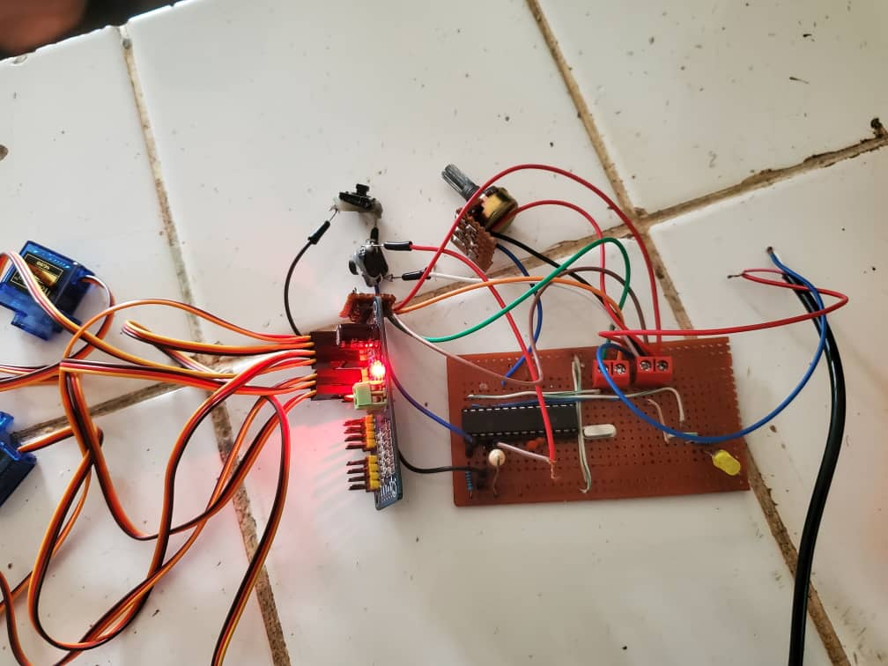
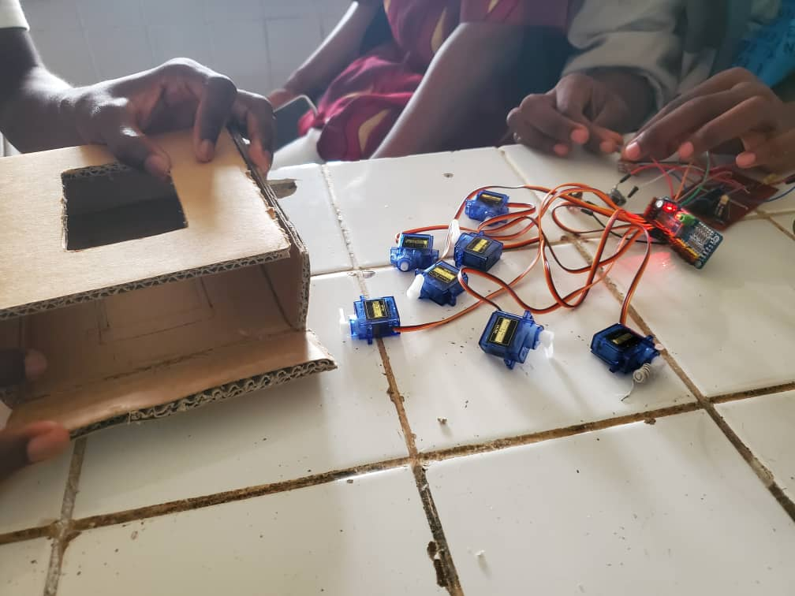
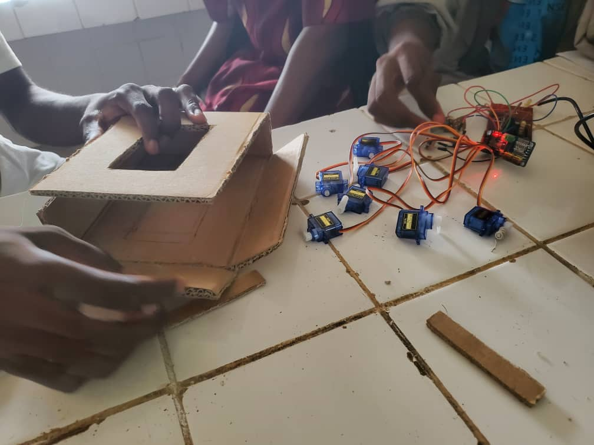
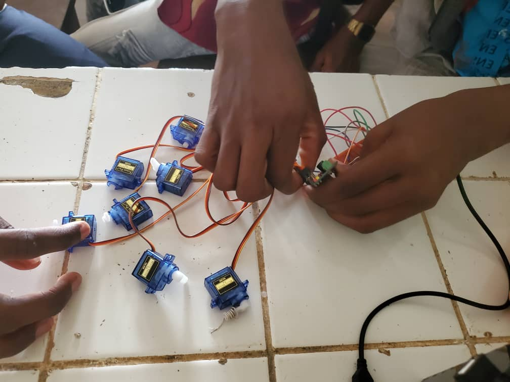
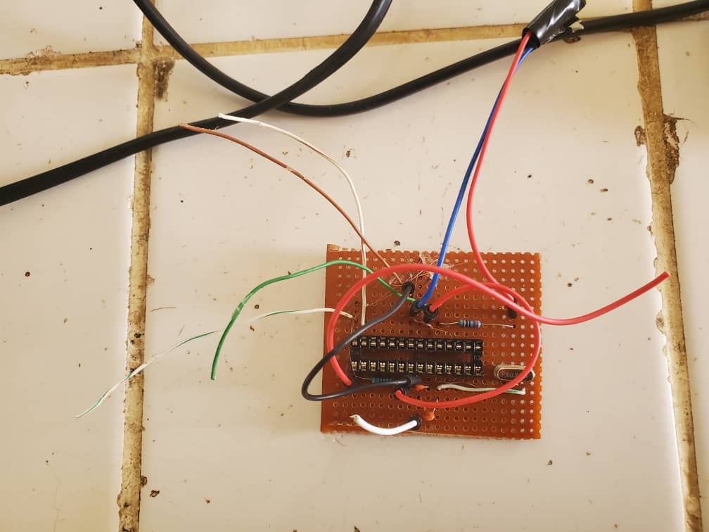
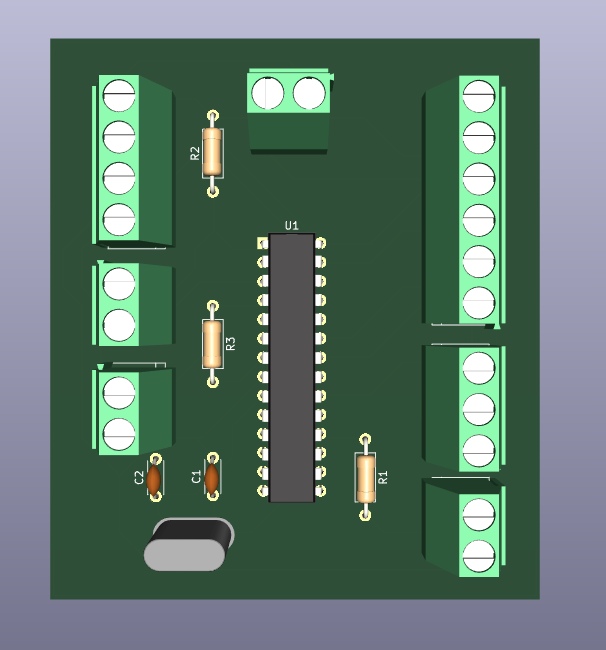
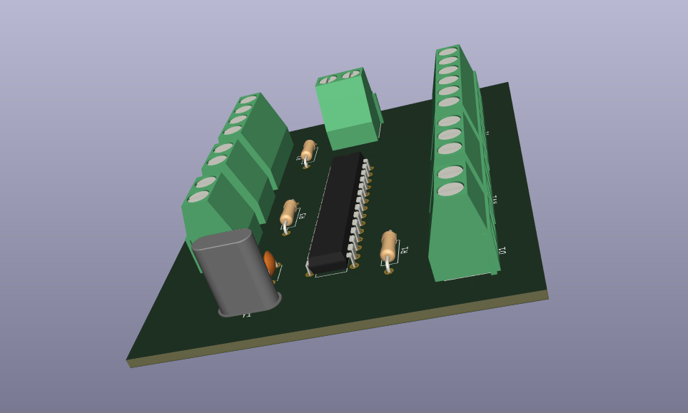

Test 3 : Réalisation d’un afficheur 7 segments
L’objectif de ce test est de concevoir et de réaliser un afficheur 7 segments mécanique, où chaque
segment est actionné par un servomoteur afin de reproduire les chiffres par des mouvements physiques.
Notre afficheur devra compter de 0 à 9 puis de 9 à 0.
Objectifs du test
- Mettre en œuvre des communications entre un microcontrôleur et un module PCA9685.
- Utiliser des servomoteurs pour réaliser des mouvements précis.
- Organiser un projet de conception électronique complet, du prototype au système fonctionnel.
Comprendre l’actionneur servomoteur
Un servomoteur est un type de moteur qui offre un contrôle de position précis, ce qui le rend particulièrement adapté à des applications nécessitant un positionnement angulaire précis, comme dans les robots, les bras robotiques ou les mécanismes de contrôle de direction.
Structure du servomoteur
Un servomoteur typique se compose de :
- Moteur DC : Le moteur lui-même, qui fournit le mouvement.
- Réducteur : Un système de réduction qui convertit la rotation rapide du moteur en un mouvement plus lent et plus puissant.
- Potentiomètre : Un capteur de position qui mesure la position angulaire de l’arbre du servomoteur.
- Électronique de contrôle : Un circuit intégré qui contrôle le moteur en fonction des signaux reçus.
Principe de fonctionnement
Un servomoteur reçoit un signal de commande en PWM (Modulation de Largeur d'Impulsion) qui indique la position angulaire désirée. Ce signal est généralement envoyé par un microcontrôleur, comme l'ATmega328P.
Le circuit intégré du servomoteur interprète ce signal PWM et ajuste la position de l'arbre du moteur en conséquence. Par exemple, un signal PWM de 1,5 ms pourrait correspondre à une position de 0° à 180°, tandis qu'un signal de 1 ms pourrait correspondre à 0° et un signal de 2 ms à 180°.
Le potentiomètre mesure la position actuelle du moteur et envoie cette information au circuit intégré, permettant ainsi un contrôle en boucle fermée. Cela garantit que le servomoteur atteint et maintient la position désirée.
Caractéristiques des servomoteurs
- La plage de mouvement : la plupart des servomoteurs ont une plage de mouvement de 180°, bien que certains servomoteurs spéciaux puissent avoir une plage de mouvement plus large.
- Leur couple : les servomoteurs sont capables de fournir un couple élevé à faible vitesse, ce qui les rend adaptés aux applications de positionnement.
- Leur précision : ils offrent un contrôle très précis de la position, ce qui les rend idéaux pour des applications nécessitant des mouvements précis.
Pour notre système d’afficheurs, vu le nombre de servomoteurs à utiliser (7), on aura à utiliser un module appelé PCA9685.
Qu’est-ce que le PCA9685 ?
Le PCA9685 est un contrôleur PWM à 16 canaux qui communique via I2C.
Le module PCA9685 est une solution largement utilisée lorsque vous devez
contrôler plusieurs appareils fonctionnant avec des signaux PWM. Bien qu'il
ait été initialement conçu pour contrôler les LED, sa polyvalence lui a permis
d'être également une option fréquente pour contrôler les servos. Cette puce est
extrêmement populaire dans les projets de robotique et d'automatisation pour sa
capacité à contrôler plusieurs appareils avec précision et simplicité.

Comment fonctionne-t-il avec notre servomoteur ?
Un servomoteur ne comprend pas des "0" et des "1", il comprend une largeur d’impulsion.
Typiquement :
- 1 ms correspond à 0°
- 1,5 ms correspond à 90°
- 2 ms correspond à 180°
Mais le PCA9685 ne fonctionne pas en millisecondes directement :
il fonctionne en "ticks" (valeurs numériques entre 0 et 4095).
Donc il faut traduire l’angle en largeur d'impulsion, puis en tick.
NB : Le terme "tick" n’est pas une unité standardisée, mais il est souvent utilisé pour désigner un "pas de temps" ou une "incrémentation" dans la génération des signaux PWM.
Le PCA9685 génère du PWM avec une résolution de 12 bits (valeurs de 0 à 4095).
Il fonctionne en fréquence qu’on choisit.
Pour les servomoteurs, on met typiquement 50 Hz (période de 20 ms).
Donc si la fréquence est de 50Hz, la période , un cycle complet ferait alors :
20 millisecondes et la valeur 4096 correspond à cette période. On fera alors
la règle de trois pour trouver la durée d’un tick qui fera 4.8us.
En nous référant aux largeurs d’impulsion du servomoteur, on poura dire que 0°
correspond à 1 milliseconde et donc à une valeur de tick = 205. De même, 90°
correspond à 307 et 180°, 410.
Mais attention : chaque servo est un peu différent. On devra
ajuster un peu ces valeurs après les premiers tests réels.
Choix du matériel pour ce test
Microcontrôleur : ATmega328P
Plutôt que d'utiliser une carte Arduino UNO complète, nous avons choisi d'employer le microcontrôleur ATmega328P en version « puce seule ». Cette approche présente plusieurs avantages :

- Une miniaturisation - le microcontrôleur seul occupe beaucoup moins de place, facilitant l'intégration dans un boîtier ou un montage personnalisé
- Un coût réduit - le prix du microcontrôleur nu est nettement inférieur à celui d'une carte Arduino complète
- Une personnalisation du circuit - permet de sélectionner précisément les composants périphériques nécessaires (oscillateur, alimentation, reset) et d'optimiser le montage
- Une approche pédagogique - offre une meilleure compréhension du fonctionnement matériel d'un système embarqué
Composants nécessaires pour faire fonctionner le microcontrôleur ATmega328P
- Un cristal oscillateur 16 MHz avec condensateurs pour fournir une horloge stable
- Une résistance pull-up sur la broche RESET pour éviter les réinitialisations intempestives
- Une alimentation 5 V régulée avec condensateurs de découplage
- Un convertisseur USB-série externe (comme un module FTDI) pour programmer le microcontrôleur via USB
Module PCA9685
Le choix du module s'est porté sur le PCA9685, un contrôleur PWM à 16 canaux, idéal pour la gestion de nos servomoteurs.
Particularités à prendre en compte
- Assurez-vous de connecter correctement l'alimentation pour éviter d'endommager le module.
- Connectez SDA (données) et SCL (horloge) aux broches appropriées de votre microcontrôleur.
Liste du matériel
| Composants | Spécifications | Rôle |
|---|---|---|
| ATmega328P | Horloge 16 MHz, 32 kB Flash, DIP28, SDA (A4), SCL (A5) | Microcontrôleur principal, maître I2C qui configure le PCA9685 pour générer les signaux PWM. |
| PCA9685 | I2C (SDA, SCL), 16 canaux PWM | Chargé de la génération des signaux PWM pour la commande des servonoteurs |
| Servomoteurs (x7) | Signal PWM, VCC, GND | Actionnent les segments de l'afficheur mécanique en rotation. |
| Convertisseur USB TTL | TX, RX, VCC, GND, DTR | Sert à programmer et déboguer l’ATmega328P via liaison série. |
| Batterie au lithium de 7.4V | VCC, GND | Sert d’alimentation pour notre système |
| Quartz 16 MHz + Condensateurs | XTAL1/XTAL2 | Génère une horloge stable pour le fonctionnement du microcontrôleur. |
| Régulateur 5 V (7805) | VIN (7–12 V) - VCC, GND | Fournit une tension régulée de 5 V à partir d’une batterie lithium. |
| LED | - | Sert de lampe témoin pour le RESET du microcontrôleur |
| Fer à souder + étain | Pointe fine 0,4 mm | Sert à l'assemblage des composants électroniques par soudure |
| Multimètre | Mesure de continuité, tension, résistance | Vérification des connexions et tests électriques |
| Breadboard + Dupont | Montage sans soudure, prototypage rapide | Réalisation de prototypes et tests avant soudure définitive |
Architecture du système
L'ATmega328P initialise le PCA9685 via le protocole I2C, permettant ainsi un contrôle efficace des servos. Le code exécute une séquence de chiffres, affichant d'abord les nombres de 0 à 9, puis en ordre décroissant de 9 à 0. Le PCA9685 convertit les commandes numériques en signaux PWM, qui sont ensuite envoyés aux sept servos. Chaque servo est responsable de l'activation ou de la désactivation d'un segment spécifique, formant ainsi le chiffre correspondant sur un afficheur. Ce cycle de mise à jour des chiffres se produit toutes les secondes, tout en permettant à l'exécution du programme de rester non bloquante grâce à l'utilisation de la fonction millis().
Le microcontrôleur et le PCA9685 sont alimentés en 5 V via la batterie au lithium de 7.4V régulée et les servomoteurs qui sont alimentés par la batterie au lithium.
Réalisation du circuit
Test du microcontrôleur ATmega328P
Avant d'intégrer le microcontrôleur ATmega328P dans notre circuit, il est recommandé de le tester sur une breadboard (plaque d’essai).
- Montage minimal
Placer le microcontrôleur sur la breadboard avec :
- Une alimentation stabilisée de 5 V.
- Un cristal de 16 MHz.
- Deux condensateurs de 22 pF (entre les pattes du quartz et la masse).
- Une résistance de 10 kΩ entre la broche RESET et VCC.
- Test de fonctionnement
Téléversez un code simple (par exemple un clignotement de LED sur une broche) pour vérifier que le microcontrôleur fonctionne correctement.
Gravure du bootloader
Le bootloader permet à l’ATmega328P d’être programmé via l’IDE Arduino. Si vous utilisez une puce neuve, il est nécessaire de le graver. Voici les étapes pour y arriver :
- Utiliser un programmateur : carte Arduino configurée comme ISP ou programmateur externe (USBasp, etc.).
- Assurer ces connexions nécessaires : MOSI, MISO, SCK, RESET, VCC et GND entre le programmateur et l'ATmega328P.
- Graver via IDE Arduino :
- Dans l’IDE Arduino, sélectionnez "Arduino as ISP", allez dans "Outils"
- Puis "Graver la séquence d’initialisation (bootloader)"
- Choisissez "ATmega328P (avec oscillateur externe 16 MHz)".
Conception sous KiCad
Le schéma du circuit est conçu pour piloter 7 servomoteurs représentant les segments d’un afficheur 7 segments, via le module PCA9685. Le schéma est réalisé sous KiCad avec des composants de la bibliothèque officielle.
- Les signaux de commande PWM sont générés par le PCA9685 et envoyés aux servos.
- Le microcontrôleur ATmega328P communique avec le PCA9685 via le bus I2C (SDA, SCL). Le circuit est alimenté par une batterie lithium (7.4V), avec régulation à 5V pour le microcontrôleur et à 6V pour les servos.
Schéma, composants et assemblage
Le schéma du circuit est conçu pour piloter 7 servomoteurs représentant les segments d’un afficheur 7 segments, via le module PCA9685.
- Les signaux de commande PWM sont générés par le PCA9685 et envoyés aux servos.
- Le microcontrôleur ATmega328P communique avec le PCA9685 via le bus I2C (SDA, SCL). Le circuit est alimenté par une batterie lithium (7.4V), avec régulation à 5V pour le microcontrôleur et à 6V pour les servos.
Soudure des composants
Procédure de soudure :
- Préchauffage : régler le fer à souder entre 300 et 350 °C.
- Nettoyage : utiliser de la laine de fer ou une éponge pour nettoyer la panne.
- Disposition : organiser les composants de manière logique sur le veroboard.
- Fixation : réaliser une première soudure pour maintenir chaque composant en place.
- Inspection : vérifier visuellement chaque joint de soudure pour éviter les faux contacts.
Conseil : Utiliser du fil à souder fin (0,38 mm recommandé), éviter les ponts de soudure, vérifier que chaque joint soit brillant et conique.
Programmation et test du circuit assemblé
Pour connecter le convertisseur USB-TTL, commencez par relier les connexions suivantes : TX à RX, RX à TX, ainsi que VCC, GND et DTR (si disponible). Une fois les connexions établies, il faut passer au téléversement du programme en utilisant l’IDE Arduino. S’assurer de téléverser un programme qui affiche les chiffres de 0 à 9, puis de 9 à 0, avec un intervalle de temps entre chaque chiffre.
Enfin, effectuer un test final en vérifiant la réaction des servos, segment par segment. Assurez-vous que l'alimentation est stable et confirmer que l'ensemble fonctionne correctement sans blocage, en évitant l'utilisation de la fonction delay().
Explication détaillée du code
Le programme suivant permet de piloter un afficheur 7 segments mécanique à base de 7 servomoteurs contrôlés via un module PCA9685. Chaque servomoteur représente un segment de l'afficheur et se positionne en fonction du chiffre à afficher. Un potentiomètre permet de régler la vitesse de comptage et un bouton-poussoir actif ou stoppe le défilement.
Objectifs
Ce code écrit poue ce test aura pour but de :
- Afficher les chiffres de 0 à 9 puis de 9 à 0 de manière cyclique en utilisant les 7 servomoteurs pour le contrôle des segments.
- Régler la vitesse de comptage avec un potentiomètre.
- Contrôler le démarrage et l'arrêt avec un bouton-poussoir.
Bibliothèques utilisées
Inclusion des bibliothèques I2C et de la librairie Adafruit pour le PCA9685.
#include <Adafruit_PWMServoDriver.h> // Contrôle module PCA9685
La bibliothèque Wire pour la gestion de la communication I2C et Adafuit_PWMServoDriver pour la communication avec le module PCA9685.
Initialisation du module PCA9685
Création d'un objet pour interagir avec le module PCA9685.
-
Valeurs minimales et maximales du signal PWM pour positionner les servos (correspondant à 0° et 180° environ).
int a = 205;
int b = 410;
Variables globales
-
Variables pour gérer l'intervalle de temps entre les affichages des chiffres (initialement 2 secondes).
unsigned long precedentTime = 0;
long intervalle = 2000; // Intervalle initial (2s)
Déclaration des variables de comptage : chiffre actuel, sens de défilement, et état actif ou non.
int chiffre = 0;
int direction = 1;
bool actif = false;
Déclaration des variables pour la gestion du bouton-poussoir avec antirebond.
const int pinBP = 2;
bool precedentEtatBP = HIGH;
unsigned long timeEcoule = 0;
const unsigned long duree = 50;
Déclaration et affectation de la broche analogique pour lire la valeur du potentiomètre
const int potentiometre = A0;
Déclaration des fonctions
int conversionAngleToPWM(int angle);
void deplacerSegment(int segment, int etat);
void affichage(int chiffre);
void ajusterVitesse();
void gestionBP();
void reset();
Configuration des segments
C'est un tableau définissant les segments actifs pour chaque chiffre de 0 à 9 :
{1,1,1,1,1,1,0}, // 0
{0,1,1,0,0,0,0}, // 1
{1,1,0,1,1,0,1}, // 2
{1,1,1,1,0,0,1}, // 3
{0,1,1,0,0,1,1}, // 4
{1,0,1,1,0,1,1}, // 5
{1,0,1,1,1,1,1}, // 6
{1,1,1,0,0,0,0}, // 7
{1,1,1,1,1,1,1}, // 8
{1,1,1,1,0,1,1} // 9
};
Fonction setup()
Initialisation des communications, de la fréquence PWM, du bouton et affichage initial.
Serial.begin(115200);
// Initialisation I2C et PCA9685
Wire.begin();
PCA9685.begin();
PCA9685.setPWMFreq(50);
// Configuration du bouton
pinMode(pinBP, INPUT_PULLUP);
// Affichage initial
affichage(chiffre);
}
Fonction loop()
Cette boucle permet de s'assurer que le chiffre change toutes les intervalle millisecondes si le système est actif. Le sens de comptage est inversé automatiquement.
gestionBP();
ajusterVitesse();
if (actif) {
unsigned long courantTime = millis();
if (courantTime - precedentTime >= intervalle) {
precedentTime = courantTime;
reset();
chiffre += direction;
// Gestion des limites
if (chiffre > 9) {
chiffre = 9;
direction = -1;
}
if (chiffre < 0) {
chiffre = 0;
direction = 1;
}
affichage(chiffre);
}
}
}
Fonctions auxiliaires
Conversion angle vers PWM
Elle convertit un angle entre 0 et 180° en valeur PWM comprise entre a et b (205 à 410).
return map(angle, 0, 180, a, b);
}
Contrôle des segments
Elle active ou désactive un segment en positionnant son servo à 70 et 160 correspondant à nos angles 90° ou 0° nécessaires pour l’affichage de nos chiffres par les servomoteurs.
int angle = (etat == 1) ? 70 : 160;
int signalPWM = conversionAngleToPWM(angle);
PCA9685.setPWM(segment, 0, signalPWM);
}
Affichage des chiffres
Elle active les segments nécessaires pour afficher le chiffre donné.
for (int segment = 0; segment < 7; segment++) {
int etat = etatSegments[chiffre][segment];
deplacerSegment(segment, etat);
}
}
Réglage de la vitesse de l'affichage
Cette fonction lit le potentiomètre et ajuste la vitesse d'affichage (vitesse variant entre 0,5 et 5 secondes).
int lectureEtatVitesse = analogRead(potentiometre);
intervalle = map(lectureEtatVitesse, 0, 1023, 500, 5000);
}
Gestion bouton
Cette fonction permet de basculer entre les mode actif et pause à chaque pression du bouton, avec détection d’état (et non de niveau).
int lectureEtatBP = digitalRead(pinBP);
if (lectureEtatBP != precedentEtatBP) {
timeEcoule = millis();
}
if ((millis() - timeEcoule) > duree) {
if (lectureEtatBP == LOW && precedentEtatBP == HIGH) {
actif = !actif;
}
precedentEtatBP = lectureEtatBP;
}
}
Réinitialisation (reset)
Elle désactive tous les segments pour une remise à zéro entre les chiffres.
for (int segment = 0; segment < 7; segment++) {
deplacerSegment(segment, 0);
}
}
Conclusion
Ce test a abouti à la création d'un afficheur 7 segments mécanique, utilisant des servomoteurs pour afficher les chiffres de 0 à 9, puis de 9 à 0. L'intégration du microcontrôleur ATmega328P et du module PCA9685 a permis d'établir une communication efficace et un contrôle précis des servos. Ce projet a renforcé les compétences en conception électronique. En somme, cette expérience a permis d'appliquer des concepts théoriques à des applications pratiques.
Veuillez accéder aux documents, fichiers kicad et schémas de circuits dans la barre de navigation rapide. Pour télécharger les fichiers, veuillez juste cliquer sur les éléments dans la barre de navigation rapide. Voici quelques photos de démonstation de notre montage:







